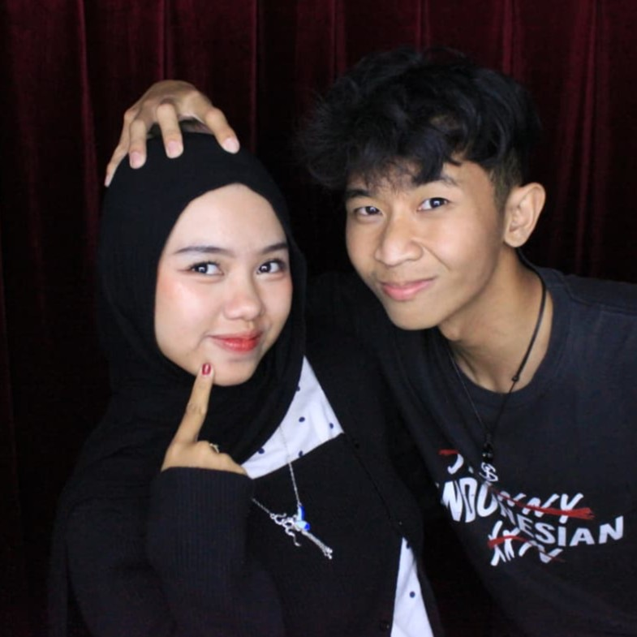
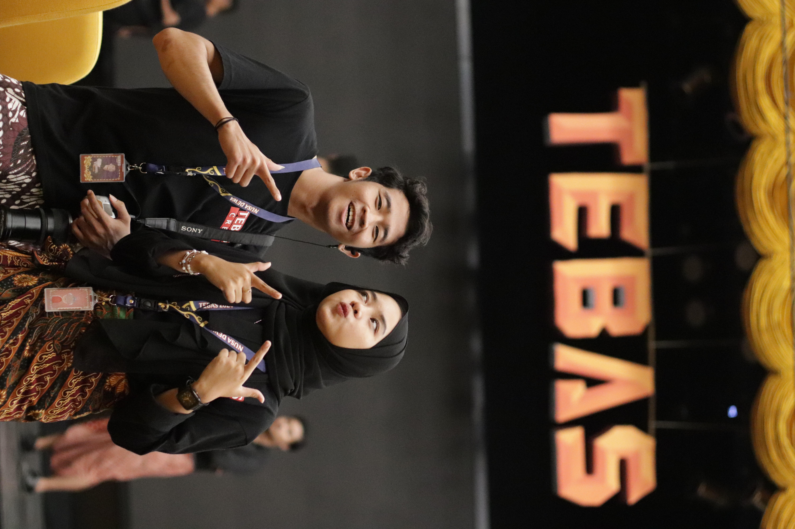
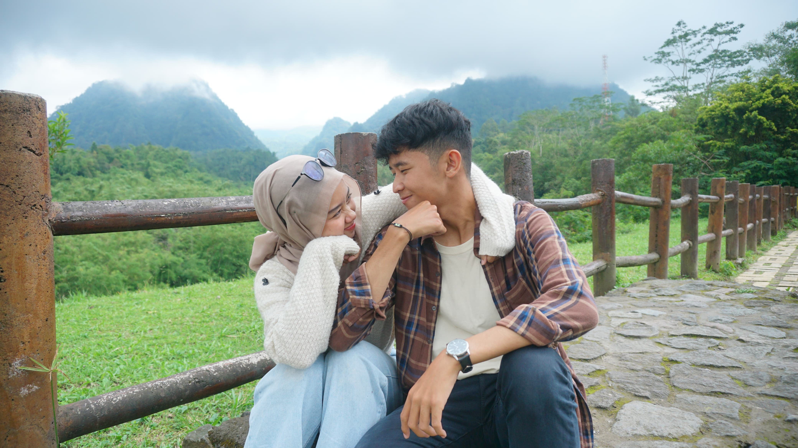
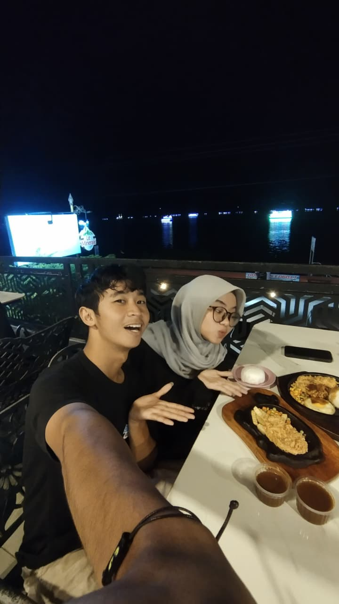
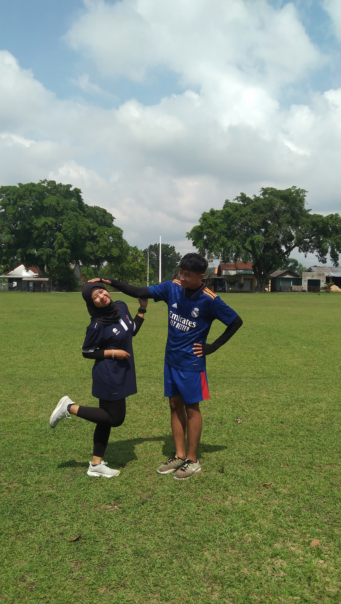

Farel, ayo selesaikan misi ini! Kalau menang ada hadiah. Kalau kalah… jangan nyalahin sinyal!! WKWK 🌻
peringatan: game ini mengandung kenangan, gombalan, dan sedikit ancaman ☀
D♥F

my favorite person ♡
you're my sunshine ☀22 · 11 · 24
READY FOR A SUNSHINE QUEST? ☀
THE LITTLE JOURNEY
Fly through the sunshine.
Terbang yang bener, pilot! Ada tiga bunga yang harus dikumpulkan sebelum sampai tujuan. Jangan sampai perlu Google Maps.
READY TO FLY ✈🌼 0 / 3
✈️ ☀️Siap terbang, Farel?Hindari awan gelap, ambil 3 bunga matahari, lalu temukan Desti di ujung perjalanan.
atau tekan tombol spasi
Perjalanan kecil menuju seseorang yang jadi rumah. 🌻
BETWEEN THE SIDE QUESTS · THE BEGINNING
Plot twist dari TEBAS.
Awalnya kita cuma saling kenal di KOMA. Terus pas TEBAS, aku sibuk di divisi acara, sementara kamu jadi KSK sekaligus pegang Instagram KOMA. Aku kebagian mengatur dan mengontrol konten yang perlu diunggah, kamu yang mengurus Instagram-nya. Jadilah ada alasan buat koordinasi, lalu obrolan yang awalnya soal acara mulai melebar ke mana-mana. Dari sering chat, bercanda, sampai akhirnya ketemu berdua dan boncengan. Siapa sangka urusan koordinasi bisa punya plot twist sepanjang ini? Aigoo.
Dulu: “konten ini kapan upload ka?” Sekarang: “besok kita ke mana sayang?” ☀
ADMIT TWO
02
YEARS TOGETHER
two players, one growing story still collecting side quests
D + F
FIRST LITTLE MISSION
Find the sunshine.
Enam kelopak kabur dan sembunyi di taman ini. Cari satu-satu ya, bocil detektif. 👀
0 / 6 kelopak ditemukan
☁️
☁️
☀️
🪴
🧺
📚
🍄
🌳
🪑
📮
🚿
🦆
🧺
🦋
🪨
🪧
🏮
🌷
🐦
psst...ada sesuatu?jangan buru-buru 👀
✿
Petunjuk: jangan cuma lihat tengah layar. Coba intip dekat benda-benda di taman. 😏
THE MANY RANDOM EPISODES OF US
Our very own sitcom.
Hubungan ini genrenya campur-campur: komedi, road trip, sedikit drama, lalu balik lagi cari makan.
🗺️Farel the plannerDulu kamu sering jadi tim pencari tempat dan penyusun agenda date. Aku tinggal ikut, sambil kasih review bintang lima atau komplain manja. WKWK.🎮PS & Netflix eraAkhir-akhir ini suka mampir ke tempat PS, main bareng, atau lanjut Netflix-an. Quality time versi: rebutan pilihan game dan film.🎁Small but memorableGanci lucu, hadiah kecil, cemilan, sampai susu. Kadang yang bikin senang bukan barangnya, tapi karena kamu kepikiran buat bawain.🚗“Sini, aku anter.”Kalimat sederhana yang sering bikin hati tenang. Saat aku butuh bantuan, kamu berusaha ada dan kadang langsung menawarkan untuk mengantar.🗣️Mode bocil aktifLagi gemas sedikit: “bocil”, “utuuutuu cayangg”. Bahasa komunikasi orang dewasa? Tidak berlaku di sini.🥹Crying episodePernah diem-dieman agak lama, lalu malah sama-sama netesin air mata. Ga tau deh kalo orang lain liatnya gimana? Alayy kali ya kita😭🧸Side questsDari pantai, lihat pemandangan bukit/hijau-hijau, keliling klaten-Jogja, sampai kafe games. Daftar tempat yang belum didatangi masih panjang!🤝Tim baikanKalau lagi ada masalah, biasanya diem dulu sampai emosi reda. dan kamu mulai nanya, lalu pelan-pelan dibicarakan. Nggak harus langsung selesai, yang penting mau memahami.
🫶
Quality time, versi kita.
Nggak harus selalu punya agenda besar. Kadang cukup pergi berdua, cari suasana baru, atau duduk bareng sambil menikmati waktu. Ternyata sesederhana itu juga bisa jadi hal yang ditunggu.
SEBERAPA KENAL KAMU SAMA AKU?
THE COUPLE QUIZPertanyaan 1
Apa yang paling cocok jadi agenda date sederhana kita?
Belum jadian, tapi nama kontaknya sudah punya ciri khas. Hmmm, mencurigakan.
9:41•••
D🌻
destiew 🌻
contact nickname · saved with sunshine
☎️call💬message♡favorite
caught you being sweet
Siapa yang kepikiran nama ini duluan?
Waktu masih pendekatan, kamu menyimpan kontakku sebagai “destiew 🌻”. Nggak tahu waktu itu kamu sadar atau nggak, tapi satu emoji kecil itu malah jadi detail yang masih aku ingat sampai sekarang. Jadi kalau ada yang tanya kenapa sunflower, ya… silakan tanya tersangka utamanya. WKWK.
ONE MORE LITTLE GAME
Sunflower match!
Cari pasangan kartunya. Jangan sampai ingatanmu kalah sama kartu bergambar. WKWK.
Moves: 0Pairs: 0 / 6
Ready? Find the 6 pairs!
A LITTLE PHOTO ALBUM
Our tiny museum.
Museum mini dari berbagai episode. Ada yang estetik, ada yang blur,
semuanya punya cerita. Klik kartunya untuk membuka kenangan!
📸
arsip zaman masih malu-malu
klik untuk membuka ♡

the beginning
🫶
jalan-jalan tanpa banyak rencana
klik untuk membuka ♡

my happy place
🍜
misi mencari makanan
klik untuk membuka ♡

food is love
🌙
hari biasa yang jadi cerita
klik untuk membuka ♡

just us being us
Satu per satu dibuka, satu per satu kenangan muncul.
Jangan lupa senyum kalau ingat momennya! ♡
A LITTLE SOUNDTRACK FOR US
Press play, sayang.
Istirahat sebentar dari misi. Pilih lagu, duduk yang manis, dan nikmati soundtrack kecil kita. 🌻
☀
🌻
OUR LITTLE SOUNDTRACK
NOW PLAYING
1000X
Ghea Indrawari
0:000:00
🔈🔊
Tekan play untuk mulai. Musik hanya diputar di halaman ini ♡
OUR VERY OWN SUN CODE
Crack the sun code.
Ini bukan ujian negara, tapi kok deg-degan ya? Jawab yang bener, bocil.
MEMORY CLUE 010 solved
🌻
Aku selalu menghadap cahaya. Siapakah aku?
Pilih jawaban yang benar!
SECRET MAIL SERVICE
Little notes, for you.
Pilih amplop sesuai keadaan. Isinya beda-beda, jadi jangan asal buka kayak lagi bongkar paket.
A LETTER FROM DESTI
22 November 2026
🌻
Dear Farel,
Happy 2nd anniversary, Sayang. Dua tahun ternyata bisa berisi banyak hal random: dari obrolan receh, agenda jalan-jalan, sampai momen yang dulu bikin bingung harus ketawa atau nangis. 🤍
Makasih sudah jadi teman yang bisa diajak menjalani banyak versi hari: yang seru, yang melelahkan, yang random, sampai yang nggak berjalan sesuai rencana. Aku suka karena kita masih punya ruang untuk jadi diri sendiri, belajar, dan tetap tumbuh berdampingan.
Dua tahun ini tentu nggak selalu mulus, tapi aku senang kita terus belajar mengenal satu sama lain. Semoga kita tetap bisa ngobrol dengan jujur, saling memberi ruang, dan memilih untuk memahami sebelum menyimpulkan.
Aku masih punya kuliah, kamu juga punya perjalananmu sendiri, dan masih banyak hal yang ingin kita usahakan. Semoga nanti meski kita punya kesibukan dan mungkin berada di tempat berbeda, kita tetap saling dukung, saling jaga, dan nggak capek jadi rumah satu sama lain. Semoga rezeki kita luas, sukses bareng, kaya raya bareng, lalu menikah wkwkk. Kalau Allah merestui sampai sana, semoga kita bisa sampai dengan versi diri yang lebih siap dan lebih baik.
Untuk sekarang, yuk lanjut kumpulin cerita. Masih banyak tempat yang belum kita datangi dan banyak hal receh yang belum sempat kita ketawain bareng.
With love, always, Desti ♡
🌻
AND THAT'S OUR LITTLE UNIVERSE
Still my favorite plot twist.
Dua tahun, banyak episode, dan masih banyak side quest yang menunggu. Semoga kita tetap bisa ketawa bareng, saling menguatkan, dan menikmati prosesnya satu per satu. The story is still loading… ☀